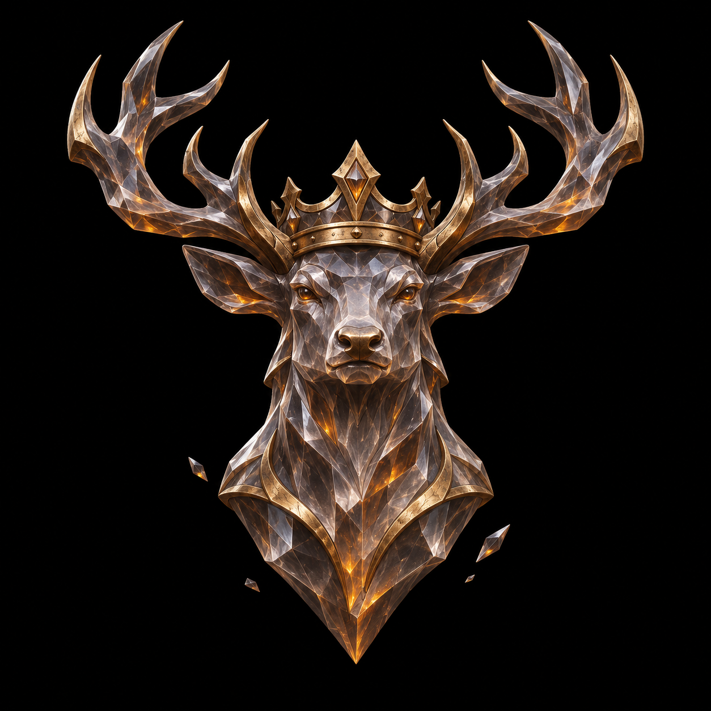

Главная роль / 01
Deer’s King
Характер, поступки и статус главной легенды года.

Три фона и по три иконки для каждой роли. Нажимайте на варианты, чтобы сравнить сочетания в карточках. Это отдельный предпросмотр оформления.
Характер, поступки и статус главной легенды года.

Харизма и истории, которые останутся в памяти.

King of the Herd / Queen of the Herd — «Король стада / Королева стада», более игровой вариант.
Forest King / Forest Queen — «Король леса / Королева леса», более сказочный.
Deer of the Year / Doe of the Year — ближе к исходным номинациям.
Deer’s King / Deer’s Queen оставлены как выбранные вами стилизованные титулы. Номера иконок можно выбирать независимо друг от друга.